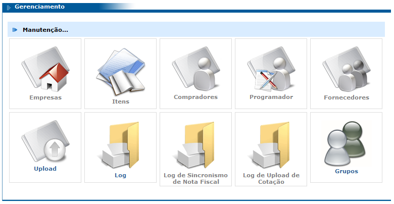

Menu Gerenciamento
Empresas
Este recurso permite a configuração da empresa do usuário logado. Por meio desta tela é possível configurar, por exemplo, os usuários e suas respectivas senhas para acesso à ferramenta, o logotipo da empresa, o e-mail do responsável pela empresa no e-Procurement, etc. Esta tela é a mesma explicada no tópico “Manutenção – Empresas” deste manual (tópico 2.2.1, página 4).
Itens
Consulta dos itens importados do ERP.

Após preencher um ou mais campos de filtro e clicar no botão “consultar”, é exibida a listagem dos itens que se encaixam no filtro contendo as colunas: Empresa (código da empresa), Código e Descrição do item.
Compradores
Neste módulo é possível sincronizar os compradores, ou seja, trazer todos os novos compradores cadastrados no ERP para o e-Procurement. Para fazer isto, basta clicar no botão “sincronizar” da tela exibida na imagem a seguir:
Para consultar compradores, basta preencher ou não os filtros de acordo com a necessidade e clicar no botão “consultar”. Após isto, será exibida uma lista com todos os compradores onde será possível ativar e desativar os mesmo. Um comprador ativo tem acesso à ferramenta e um comprador inativo não tem acesso à ferramenta.
Programadores
Por meio deste módulo é possível sincronizar os programadores, ou seja, trazer todos os novos programadores cadastrados no ERP para o e-Procurement.
Este módulo tem as mesmas funcionalidades do módulo “Compradores”. Sendo assim, os funcionamentos da consulta, alteração e sincronismo são os mesmos.
Fornecedores
Por meio deste módulo é possível sincronizar os fornecedores, ou seja, trazer todos os novos fornecedores cadastrados no ERP para o e-Procurement.
Este módulo tem as mesmas funcionalidades do módulo “Compradores”. Sendo assim, os funcionamentos da consulta, alteração e sincronismo são os mesmos.
Relatório Adesão
A adesão é uma taxa cobrada do fornecedor para que ele possa usar a ferramenta e usufruir dos recursos nela oferecidos.
Por meio deste módulo é possível consultar a situação de cada fornecedor filtrando por: todos os fornecedores, fornecedores que geraram o boleto, mas não efetuaram o pagamento e fornecedores que ainda não geraram o boleto.
Após preencher os filtros da consulta, basta clicar no botão “consultar” para visualizar a listagem a seguir:
Cada fornecedor por ou não pagar uma taxa de adesão para utilizar a ferramenta. Esta taxa é calculada com base no faturamento do fornecedor dos últimos doze meses com a empresa em questão (observe o campo “Valor” da figura acima) e ela precisa ser renovada a cada ano (campo “Data da Renovação”).
Condição de Pagamento por Fornecedor
Por meio deste módulo é possível habilitar e desabilitar as condições de pagamento importadas do ERP para cada fornecedor. Basta escolher o fornecedor na tela da figura a seguir e clicar no botão “consultar”. Veja:
Após isto, será exibida uma listagem contendo todas as condições de pagamento. As condições de pagamento que estiverem ativadas/marcadas (coluna lateral esquerda da listagem) serão as que ficarão disponíveis na ferramenta para este fornecedor. Observe:

Condição de Pagamento de Fornecedor para Fornecedor
A função deste módulo é copiar condições de pagamento de um fornecedor para outro e também transferir a situação (habilitada / desabilitada) das condições de pagamento de um fornecedor para outro. Para realizar esta operação, basta escolher o fornecedor de origem, o fornecedor destino e clicar em “gravar”.

Condição de Pagamento para todos Fornecedores
A função deste módulo é incluir e remover condições de pagamento de todos os fornecedores. Para fazer isto, basta escolher a condição de pagamento desejada, selecionar umas das opções: “Incluir a todos” e “Remover de todos” e clicar em “gravar”.
Upload
Este módulo já foi descrito anteriormente no tópico “Manutenção – Upload” localizado na página 9 deste manual.
Log
Este módulo já foi descrito anteriormente no tópico “Manutenção – Log”.